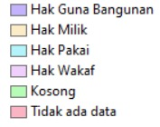
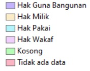

PETA DESA
Berikut merupakan informasi mengenai status tanah di Desa Campursari, Kecamatan Bulu, Kabupaten Temanggung. Berdasarkan peta diatas status tanah di Desa Campursari terbagi menjadi 6 bagian yaitu hak guna bangunan, hak milik, hak pakai, hak wakaf, kosong dan tidak ada data. data tersebut kami himpun berdasarkan observasi langsung yang dilaksanakan pada tahun 2022.